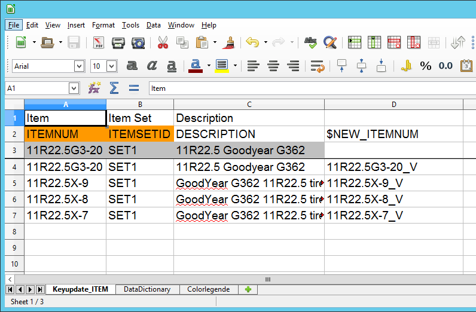
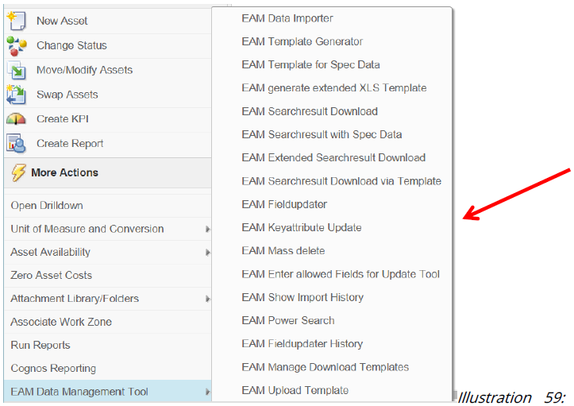
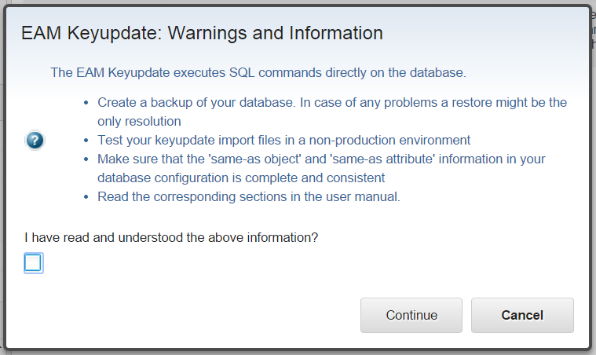
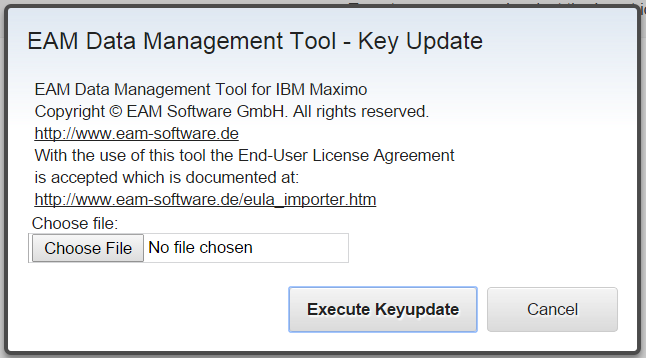
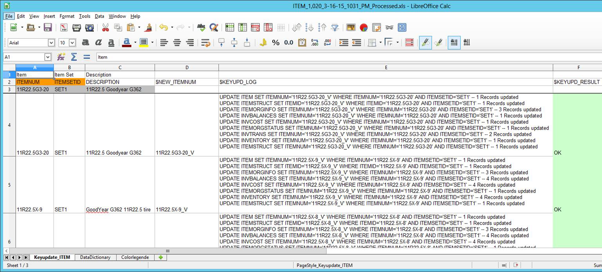
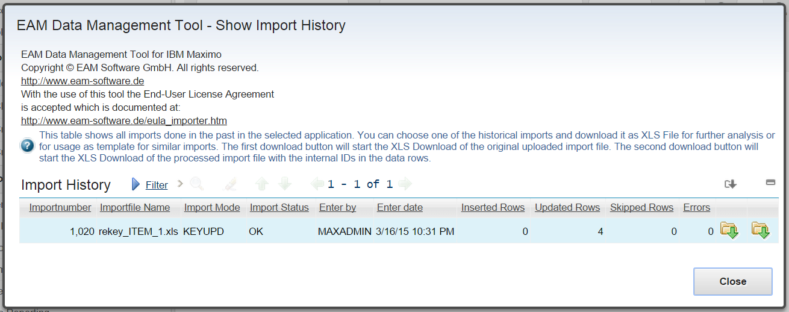

EAM Keyupdate
Key attributes like ASSETNUM in Assets, LOCATION in location, ITEMNUM for items and so on can be defined during creation of the Maximo Objects. These key attributes are later used in various other tables within the maximo database. Maximo does use "foreign keys" or "cascaded updates" in the database, therefore key attributes can not be changed later from within Maximo.
On the other hand there might be valid reasons why we want to change key attributes later. These could be:
- Naming conventions have changed o r new conventions are adopted. Often the old key attribute values do not adhere to the new conventions.
- Company names have changed due to mergers and acquisitions
- Mistakes during data entry in key attributes should be corrected
- Required changes during upgrades of Maximo or consolidation of different Maximo systems into one.
Accurate key values allow easier integration and data exchange with other systems and also reduce the risk of data entry errors.
Maximo does not use "foreign keys" in the database directly, but stores the same information in its own tables. E.g. the attribute ASSETNUM in the ASSETMETER object is defined to be "Same as Object" ASSET and "Same as Attribute" ASSETNUM. If you change the length or datatype of the key attribute ASSE TNUM in the ASSET object, Maximo also changes all the related attributes in the other tables identified by the SAMEASOBJECT and SAMEASATTRIBUTE relations.
The SAMEASOBJECT and SAMEASATTRIBUTE information can be used to identify all possible tables and attr ibutes which can contain a key values. If for example you want to change the ITEMNUM of one item in your inventory the SAMEAS information can be used to identify all attributes where the ITEMNUM is possibly stored in.
The EAM Keyupdate feature used exactly this SAMEASOBJECT and SAMEASATTRIBUTE information to create the SQL statements. Only if the SAMEAS information is complete and valid all occurrences of a key can be identified and renamed. Incomplete information in the database configuration such as missing SAMEASOBJECT and SAMEASATTRIBUTE data leads to inconsistent data after the keyupdate because not all occurrences are renamed.
EAM Keyupdate: Warnings and important information
When using the EAM Keyupdate please pay attention to the following:
- Access to the SIGOPTION for EAM Keyupdate should only be granted to those users and groups, who know what they are doing.
- The EAM Keyupdate tool executed SQL statetements directly in the Maximo database. Test your keyupdate imports in a test environment.
- Create a backup of your maximo database bevor using the EAM Keyupdate
- Make sure that the SAMEASOBJECT and SAMEASATTRIBUTE information in your database configuration application is complete and correct. Only then all occurrences can be changed and the data is consi stent.
- Field validator classes and Maximo business logic is not executed when working with SQL statements on the database directly. You have to make sure that the new values for the key attributes are valid in your Maximo environment. Do not write lowercase data in Maximo attributes which are defined with datatype UPPER (a lot of them are; it would be allowed in the Maximo UI) and check the length of your key attributes.
- Enable the Admin mode in the database configuration before using the EAM Keyupdate. With this precaution changes in the Maximo database can not interfere with running integrations or crontasks or other users changing the same data. The admin mode is required unless you create the System Property „ EAM.Importer.KeyUpdate.NoAdminMode" with a value other than 0.
- The EAM Keyupdate software tries to verify the new value for the key attribute. It creates a new object in the current application and sets the new key value into the key attribute. The EAM Keyupdater then reads back the value from the object and uses this value for the future processing. If the value which was read back from the Object is different from the value in the Import file (because the value was converted to uppercase or the fieldvalidator somehow changed the value), then the new value is also written back into the excel file. This check of the new key attribute values can be skipped if you set the System Property „ EAM.Importer.KeyUpdate.SkipKeyValueCheck" to a value other than 0.
Layout and COntent of the Keyupdate Import File
The EAM Keyupdate feature uses a Excel import file as datasource. The basic layout is similar to the usual import files used to import and update data with the EAM Importer. The conventions for the keyupdate import file is as follows:
- The name of the excel worksheet must start with the prefix „Keyupdate_"
- The second row of the worksheet contains the attribute names. This information is used by the tools and therefore required.
- The first row usually contains th e attribute titles (in the users language). This row is optional and can be empty. This information is filled in if you start with a search result download or a generated template.
- The third row contains sample data and can also be left empty.
- The user dat a which is processed by the EAM Keyupdater starts in row four! (as with the importer)
- For system level objects (CONDITION, CURRENCY, MAXGROUP, MAXUSER, PERSON, SITE, …) two columns are required in the keyupdate import file: The key attribute of the object (e.g. PERSON) and the key attribute with the prefix „$NEW_" (e.g. $NEW_PERSON). The column with the key attribute contains the current (old) value, and the column $NEW_<attributename> contains the new value for the key attribute.
- ORG level, SITE level, ITE MSET level or COMPSET level Maximo objects also need the attributes ORGID, SITEID, ITEMSETID or COMPSETID in the keyupdate import file to uniquely identify the record.
- Other column/attributes can be included in the file but are ignored.
The following screenshot shows a keyupdate import file for ITEM data. This keyupdate import changes the ITEMNUM of three items in the ITEM table and all related data.
 Illustration 58: Keyupdate import file for ITEM
Mode of Operation
The EAM Keyupdate is available in the Select Action Menu in the list view of your application (if you have installed the EAM Datamanagement Tools for the application and granted access to the SIGOPTIONS in the security group application).
 Illustration 59: Select Action Menu with EAM Keyattribute Update option
This action opens the following dialog which displays some warning again:
 Illustration 60: EAM Keyupdate Warnings and Information dialog
The user has to indicate that he has read and unterstood the information by selecting the corresponding checkbox. After that select the button "Continue" which opens the following Import dialog:
 Illustration 61: EAM Keyupdate file upload dialog
Select the keyupdate import file and click the „Execute Keyupdate" button.
If there is an error during processing the import file the import will abort and a
errormessage is displayed to the user. Similar to the normal data import the
processed Excel file is sent back to the client. Also the import summary is displayed
and the involved records are shown in the list view.
Two additional columns are added to the import file during processing:
- the column $KEYUPD_RESULT holds the overall result for processing this row of data. This is either OK with light green background or Error with a red background.
- The column $KEYUPD_LOG contains all the SQL Statements which where executed against the database and the number of affected records. These SQL statements where executed within a single database transaction. So if the $KEYUPD_RESULT is OK then all of the SQL statements where executed successfully. Otherwise none of the SQL statements was saved and the transaction was rolled back.
The following screenshot displays the processed keyupdate import file after updating some ITEMNUMs in the ITEM application:
 Illustration 62: Processed Keyupdate import file for ITEM application
The originally uploaded keyupdate import file and the processed file are also saved in the EAM import history.
 Illustration 63: Import history dialog with keyupdate entry in ITEM application